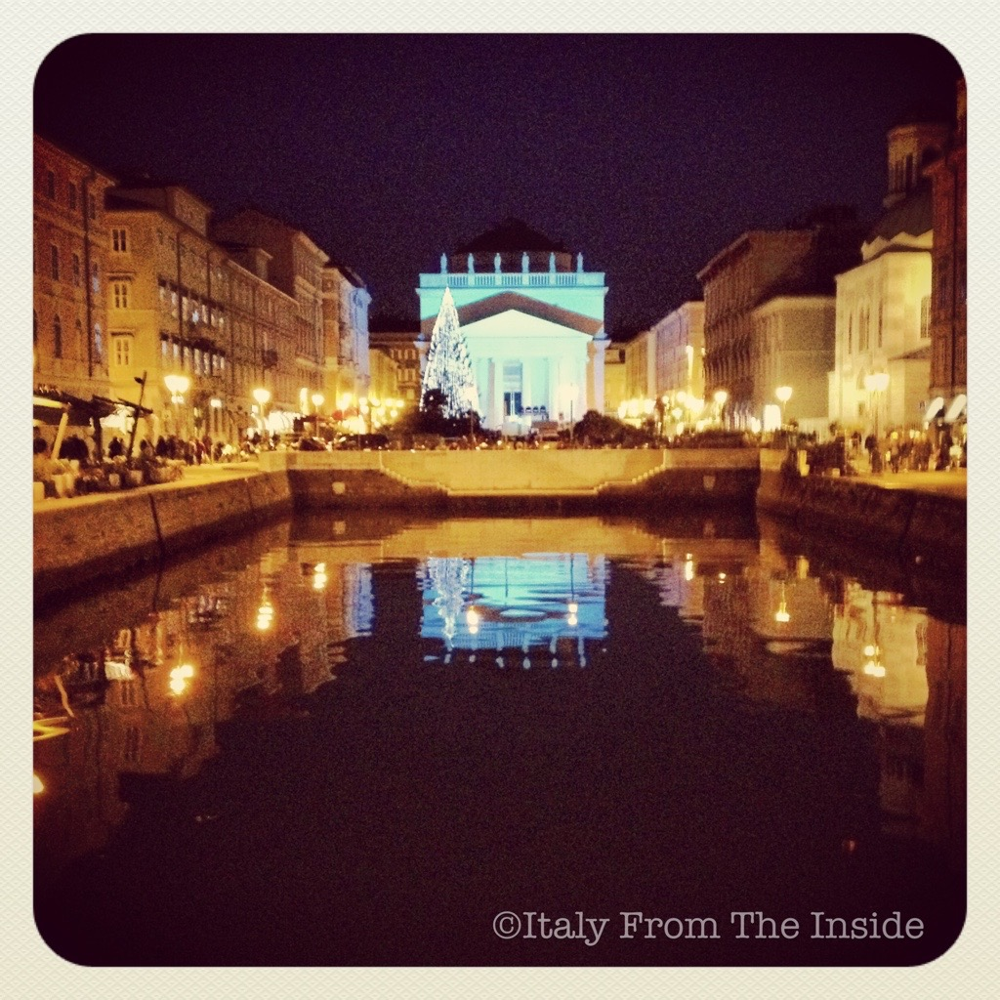

Trieste's Canal Grande was built in 1756 to allow boats to easily reach the city center and unload their cargo, which could quickly be transported to the market nearby. Today the canal doesn't serve this purpose anymore, but its water mirror is still very appreciated and admired for its beautiful reflections, especially at Christmas time.